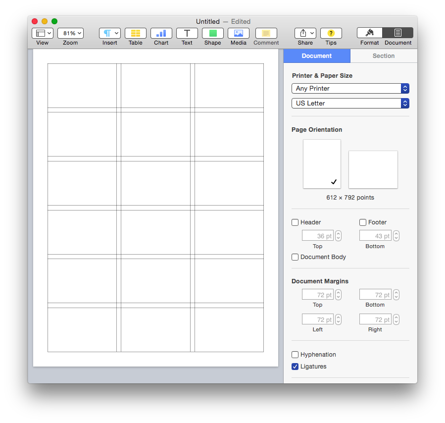
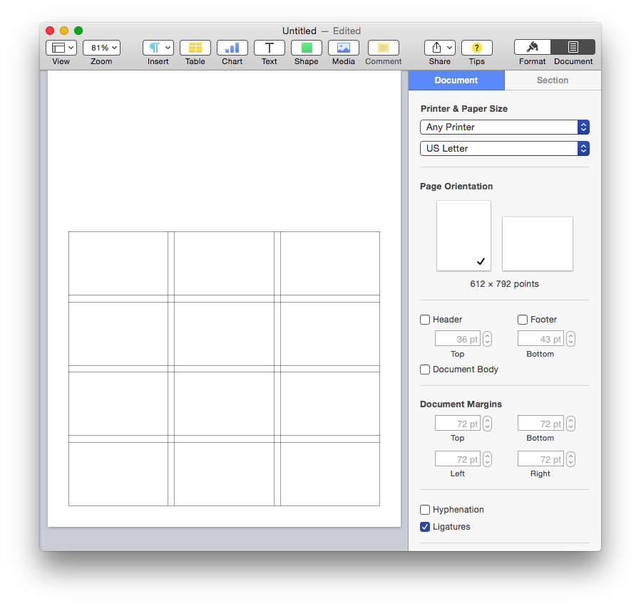
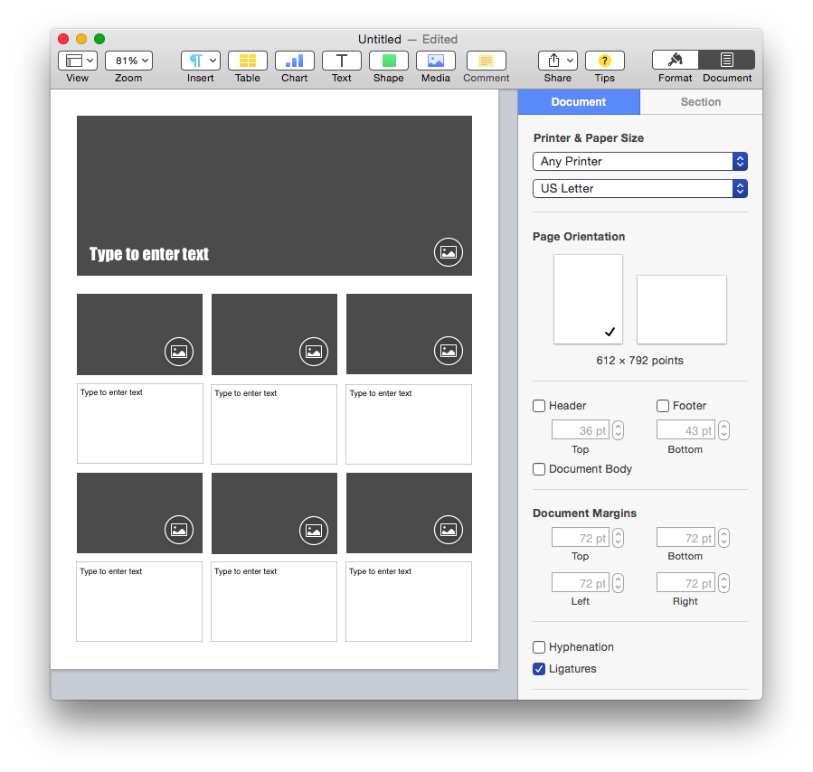

Documents created by any of the iWork applications, Pages, Keynote, or Numbers, can incorporate a common set of elements, including images, shapes, lines, tables, charts, movies, and audio clips.
To AppleScript and the built-in scripting support of the iWork applications, these elements are considered iWork Items, and share a common set of properties, detailed in the iWork Item class from the iWork Suite:
The iWork Suite iWork item Class
iWork item n [inh. iWork item ] : An item which supports formatting.
elements
contained by slides, document.
properties
height ( integer ) : The height of the iWork item.
locked ( boolean ) : Whether the object is locked.
parent ( iWork container r/o ) : The iWork container containing this iWork item.
position ( point ) : The horizontal and vertical coordinates of the top left point of the iWork item.
width ( integer ) : The width of the iWork item.
responds to
delete, exists
Here are the properties, detailed in the line class from the iWork Suite:
The iWork Suite line Class
line n [inh. iWork item ] : A line.
elements
contained by iWork containers such as: pages.
properties
end point ( point ) : A list of two numbers indicating the horizontal and vertical position of the line ending point.
reflection showing ( boolean ) : Is the line displaying a reflection?
reflection value ( integer ) : The percentage of reflection of the line, from 0 (none) to 100 (full).
rotation ( integer ) : The rotation of the line, in degrees from 0 to 359.
start point ( point ) : A list of two numbers indicating the horizontal and vertical position of the line starting point.
responds to
delete, exists, make.
Grid-based page layouts are a common design element of marketing materials and technical documents. They present information in a clean manner that is easily absorbed.
In Pages, lines make excellent temporary guides for creating grid-based page designs in documents with their Document Body text flow disabled. Using the scripts provided on the following pages, it is easy to develop attractive and functional templates for use in your business or organization.
NOTE: To learn how to automatically create a grid of page items (text boxes and shapes), check out this documentation in the examples section.
(⬇ see below ) FULL PAGE GRID • A 3-column 6-row grid of lines with 12 point gutters spaced with a 36-point margin on all sides of the page:

(⬇ see below ) PARTIAL PAGE GRID • A 3-column 4-row grid of lines with 12 point gutters spaced with a 280-point top margin and 36-point margin on the other sides of the page:

(⬇ see below ) PARTIAL PAGE GRID DESIGN • A group of image and text placeholders added to the partial page grid shown above:
